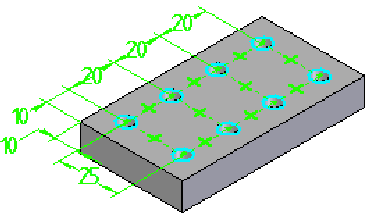

Hole command (synchronous)
Use the Hole command to construct simple, threaded, counterbored, countersink, and tapered holes. For more information, see the Hole types help topic.

When you select the Hole command, the command bar guides you through the following steps:
-
Define hole parameters.
-
Select a model face to place hole.
-
Click to place hole.